캐시가 뭐고 얼마나 아껴 주나요?
Claude Code로 하루 종일 일해서 대화가 50만 토큰까지 자랐다고 해 볼게요. 이때 "계속해" 한 마디만 보내도 Claude Code는 지금까지의 대화 50만 토큰을 통째로 다시 보내요. 모델은 이전 대화를 기억하지 않아서, 매번 전부를 다시 읽어야 이어서 답할 수 있거든요.
대화가 여기까지 자라는 동안 100번을 주고받았다면, 그동안 보낸 양을 다 더하면 2,500만 토큰이에요. 영상은 이 양을 Opus 5.5 정가로 계산하면 14만 원어치인데, 캐시 덕분에 실제로 나가는 돈은 1만 3천 원 정도라고 해요.
발표자 본인의 지난달 기록도 보여 줘요. 왼쪽 위 빨간 숫자 '4,000만 원+'가 캐시가 없었다면 API 요금으로 나갔을 금액이고, 그 아래 파란 '510만'이 캐시 덕분에 실제로 줄어든 금액이에요. 빨간 칸 대부분이 비어 있고 맨 아래 한 줄만 파랗게 채워진 게 그 차이예요.
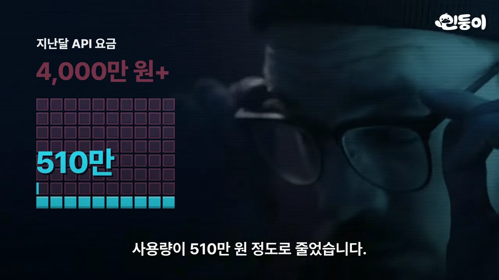
캐시는 게임의 체크포인트예요
게임에서 죽을 때마다 처음부터 다시 하면 너무 오래 걸리니까 중간중간 체크포인트를 남기죠. Claude도 이미 읽은 대화를 체크포인트처럼 저장해 둬요. 다음 요청이 오면 저장된 데까지는 건너뛰고 새로 붙은 부분만 처리해요. 체크포인트에서 이어 가면 캐시 히트, 체크포인트가 없어서 처음부터 다시 읽으면 캐시 미스예요.
미스가 나면 응답이 느려지고 비용도 뛰어요. 화면의 요금표에서 Opus 5.5 줄을 보면, 1시간짜리 캐시를 새로 쓰는 값(1h writes)이 100만 토큰에 8달러, 캐시에서 읽는 값(Hits and refreshes)이 0.2달러예요. 영상이 말하는 '최대 40배'가 바로 이 두 칸의 차이예요.
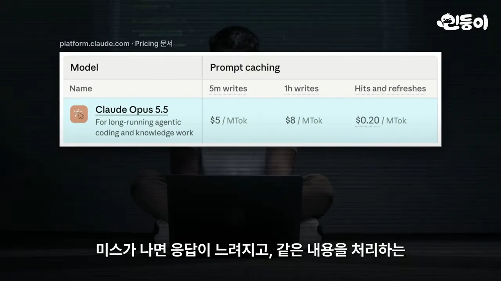
구독으로 쓰는 사람도 남 일이 아니에요. 돈이 따로 나가지 않을 뿐, 미스가 날 때마다 사용량 한도에 그만큼 빨리 닿아요. OpenAI Codex도 같은 방식으로 캐시를 쓰기 때문에 이 영상의 이야기는 두 도구 모두에 해당해요.
1시간 규칙: 자리를 비울 때 할 일
문제는 이 체크포인트가 영원히 남지 않는다는 점이에요. 게임 체크포인트는 한 번 저장하면 계속 남지만, 캐시는 마지막 요청 뒤 일정 시간이 지나면 지워져요. 구독으로 쓰면 1시간, API 키로 쓰면 5분이에요. 대신 캐시를 한 번 쓸 때마다 시간은 처음부터 다시 흘러요.
영상은 이 대목에서 Claude Code 문서의 Cache lifetime 문단을 보여 줘요. 캐시를 읽는 요청이 올 때마다 타이머가 다시 시작돼서 계속 일하는 동안에는 캐시가 유지되고, 오래 쉬고 돌아오면 첫 요청이 전체를 다시 계산하느라 느려진다는 내용이에요. 그 다시 계산하는 값을 금액으로 바꾼 게 아래 화면이에요. 위쪽 요금표에서 1h writes 8달러 칸이 강조돼 있어요.
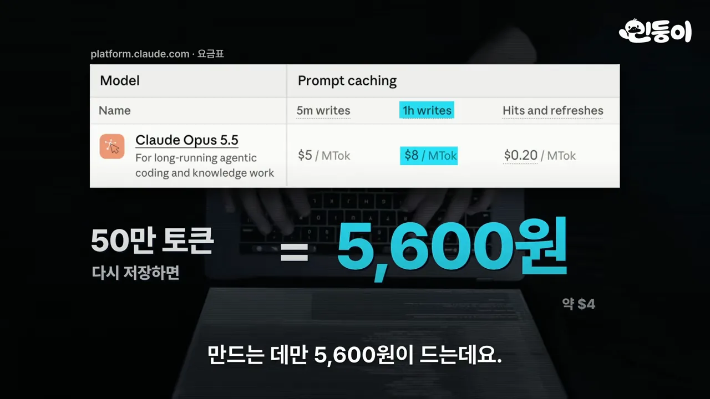
8달러에 50만 토큰(0.5 × 100만)을 곱하면 약 4달러, 5,600원이에요. 하루 네 번, 한 달 22일 동안 이렇게 캐시를 날리면 1년에 590만 원이 돼요.
잠깐 비울 때는 /loop
해결책은 1시간이 지나기 전에 /loop로 메시지를 보내 체크포인트가 지워지지 않게 하는 거예요. 화면의 문서 문장 'run a prompt on repeat while the session stays open'은 세션이 열려 있는 동안 프롬프트를 반복 실행한다는 뜻이에요. 아래 파란 막대는 /loop가 체크포인트를 계속 채워 두는 모습을 그린 거예요.
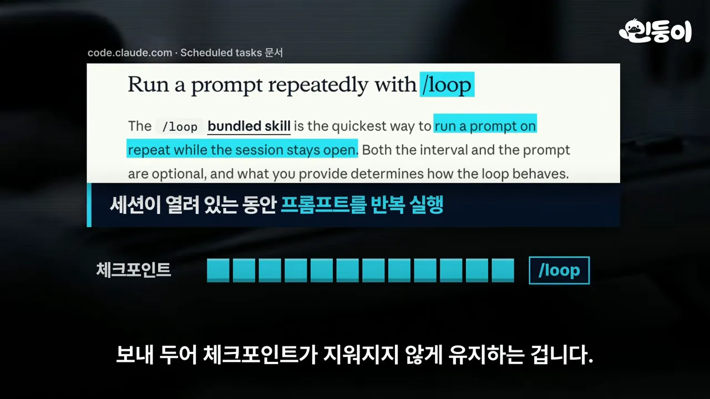
/loop는 원래 반복 작업용 기능이지만, 캐시를 살려 두는 데도 쓸 수 있어요. 영상 01:54에서 보기비용도 따져 봐요. 30분마다 짧은 메시지를 보내면 한 번에 140원 정도예요. 화면의 시소 왼쪽에 쌓인 작은 블록 40개가 이 메시지들이고, 오른쪽 큰 블록 하나가 체크포인트를 새로 만드는 비용이에요.
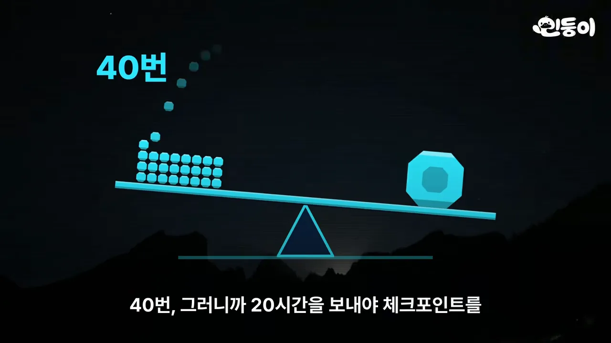
오래 비울 때는 정리하고 가요
자리를 더 오래 비운다면 살려 두기보다 정리하는 편이 나아요. 일이 끝났는지에 따라 방법이 달라요.
| 상황 | 할 일 | 왜 좋은가요 |
|---|---|---|
| 1시간 안에 돌아와요 | /loop로 짧은 메시지를 보내요 | 메시지 40번이 다시 저장 한 번 값이에요 |
| 일 하나가 끝났어요 | 다음 할 일을 파일에 적고 /clear | 새 대화가 빈 상태에서 가볍게 시작해요 |
| 일이 아직 진행 중이에요 | 떠나기 전에 /compact | 돌아와서 50만 토큰 대신 짧은 요약만 저장해요 |
화면에서는 '다음 할 일.md' 메모에 남은 작업, 정해 둔 것, 다음 단계를 적고 오른쪽 터미널에서 /clear를 치는 모습으로 보여 줘요.
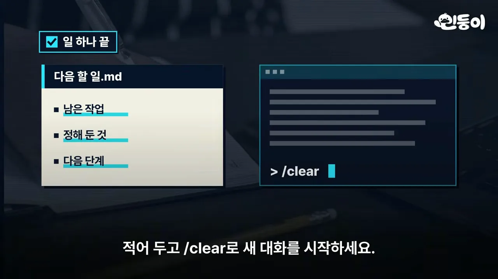
/compact는 캐시가 살아 있을 때 해야 싸요. 요약하는 요청도 지금까지의 대화를 읽어야 하는데, 캐시가 살아 있으면 그 부분을 싸게 읽거든요.
API 키라면 보관 시간을 1시간으로
API 키로 쓰는 사람은 설정에서 보관 시간을 5분에서 1시간으로 올릴 수 있어요. 화면 위쪽 문서 문장의 promptCacheTtl을 1h로 두는 설정이에요. 대신 위 요금표처럼 저장 단가가 5달러에서 8달러로 올라가요.
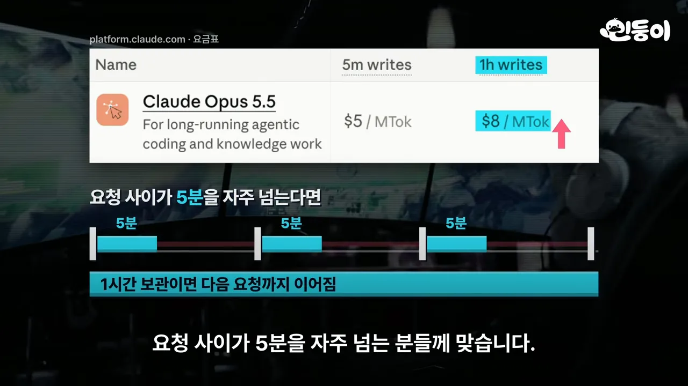
모르는 사이 캐시가 날아가는 경우
캐릭터를 바꾸면 체크포인트를 못 써요
게임에서 전사로 하던 판을 마법사로 바꾸면 전사의 체크포인트는 쓸 수 없죠. 모델도 같아요. 캐시가 모델마다 따로라서, Opus로 하다가 Sonnet으로 바꾸면 Sonnet은 대화를 처음부터 다시 읽어요. 화면의 Switching models 문서 첫 문장 'Each model has its own cache'가 바로 그 말이에요.
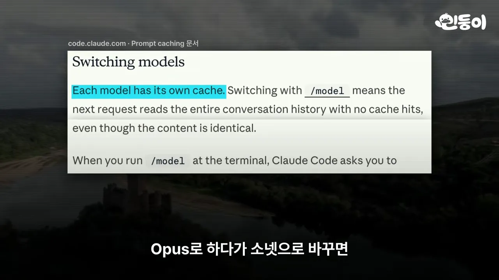
모델 이름을 직접 바꾸지 않아도 같은 일이 생기는 경우가 두 가지 있어요. 화면 위 문단은 패스트 모드와 일반 속도가 캐시를 따로 쓴다는 내용이고, 아래 문단은 opusplan 설정이 계획 모드에서는 Opus, 실행할 때는 Sonnet으로 바뀌어서 계획 모드를 켜고 끌 때마다 캐시가 새로 시작된다는 내용이에요.
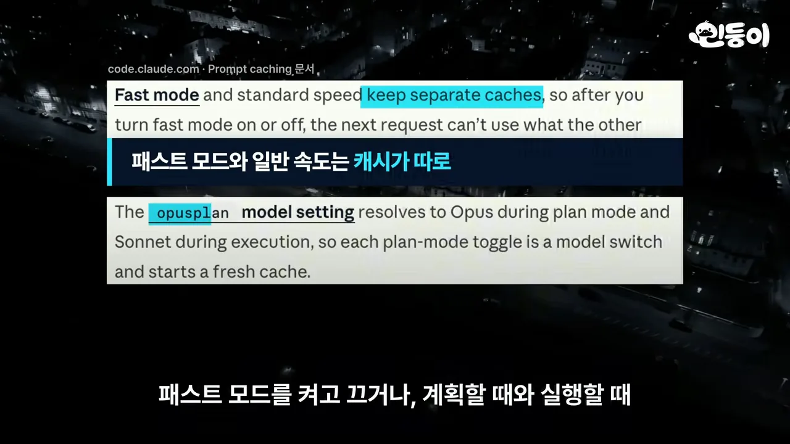
opusplan의 모드 전환도 사실상 캐릭터 교체예요. 영상 02:52에서 보기그래서 영상의 결론은 모델을 작업 시작 때 정해 두고, 다른 모델이 필요하면 새 대화에서 쓰라는 거예요.
바꿔도 괜찮은 것들
모든 설정 변경이 체크포인트를 날리는 건 아니에요. 코드 파일을 고치는 건 괜찮아요. CLAUDE.md를 고쳐도 괜찮아요. 화면의 문서는 프로젝트와 사용자 수준의 CLAUDE.md를 세션 시작 때 한 번 읽어 메모리에 들고 있다고 설명해요. 그래서 중간에 고쳐도 캐시는 그대로지만, 고친 내용도 지금 대화에는 반영되지 않아요.
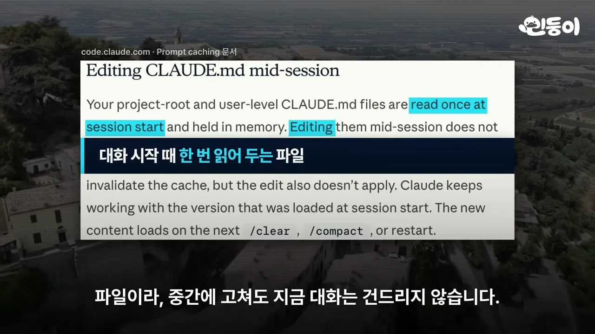
CLAUDE.md는 /clear나 /compact를 하거나 다시 켰을 때부터 적용돼요. 영상 03:12에서 보기추론 강도를 바꾸는 /effort는 모델에 따라 달라요. 화면 문단은 대부분의 모델에서 강도마다 캐시가 따로라 중간에 바꾸면 전체를 다시 계산한다고 해요. 하지만 Opus 5.5, Sonnet 5.5, Haiku 5.5, Fable 5.1을 구독이나 API 키로 쓰면 캐시가 그대로라는 부분이 강조돼 있어요.
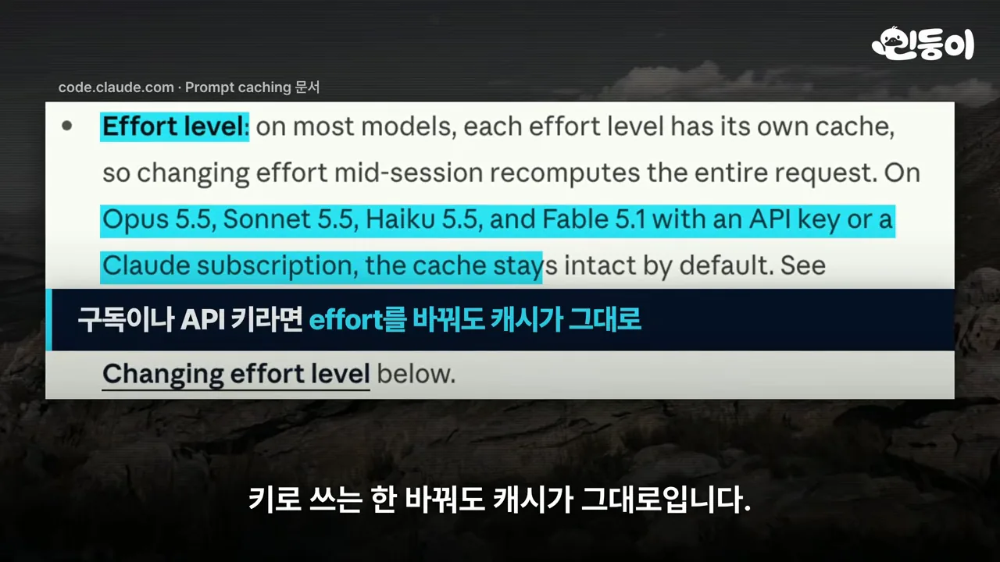
/effort를 바꿔도 캐시를 잃지 않아요. 다른 모델에서는 여전히 새로 시작해요. 영상 03:27에서 보기OpenAI Codex 쪽 소식도 붙여요. 화면은 Codex 팀의 Tibo가 올린 게시물로, 대화 중에 추론 강도를 바꿔도 캐시가 더 이상 깨지지 않게 Codex CLI(Command Line Interface)를 업데이트했다는 내용이에요.
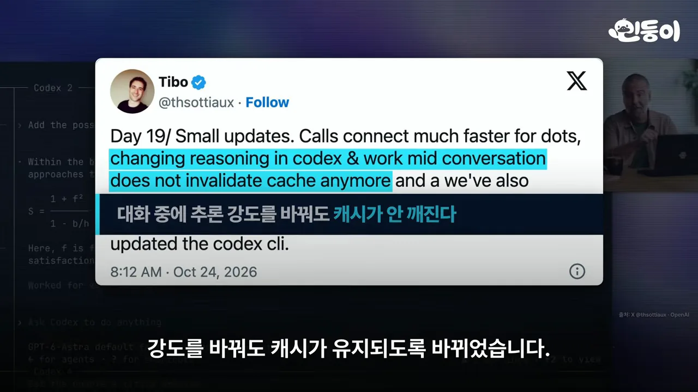
| 캐시가 새로 시작돼요 | 캐시가 그대로예요 |
|---|---|
| 모델 바꾸기 (Opus → Sonnet) | 코드 파일 수정 |
| 패스트 모드 켜고 끄기 | CLAUDE.md 수정 (반영은 다음 /clear부터) |
opusplan에서 계획 모드 전환 | 5.5 모델·Fable 5.1에서 /effort 변경 |
스크린샷이 쌓이면
자주 놓치는 경우가 두 가지 더 있어요. 하나는 스크린샷이에요. 이미지는 생각보다 토큰을 많이 차지해서, 계속 쌓으면 대화가 빠르게 길어져요. 더 큰 문제는 오래된 이미지를 정리할 때예요. 화면 문서의 강조 문장처럼 이미지를 지우면 그 이미지가 있던 메시지가 바뀌어서, 그 지점부터 대화를 다시 처리해요.
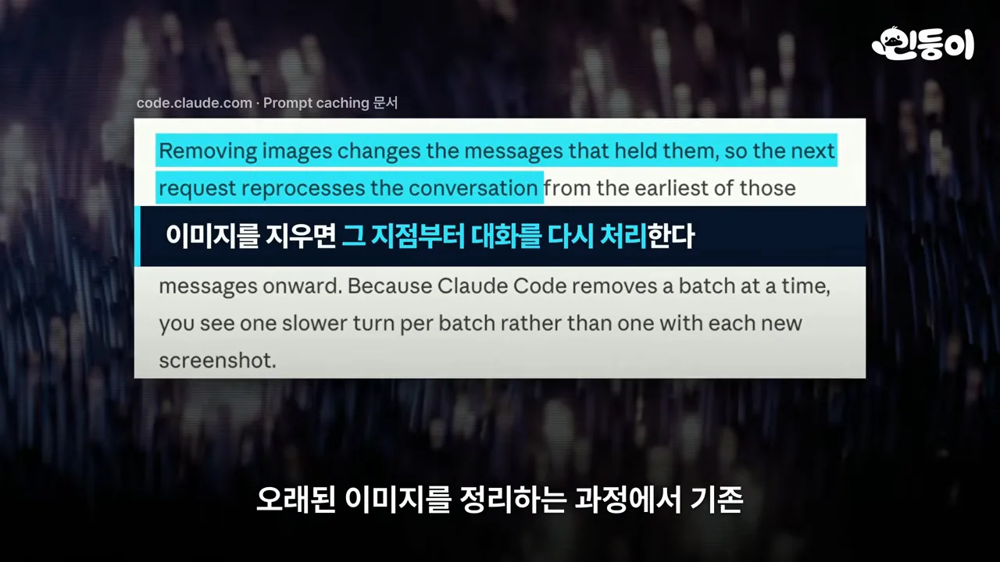
서브에이전트는 처음부터 시작해요
다른 하나는 서브에이전트예요. 서브에이전트는 새로 불러낸 동료 캐릭터라서, 내가 어디까지 왔는지 모르는 채 처음부터 시작해요. 게다가 화면 문서에 강조된 것처럼 구독이어도 서브에이전트의 캐시는 5분짜리예요.
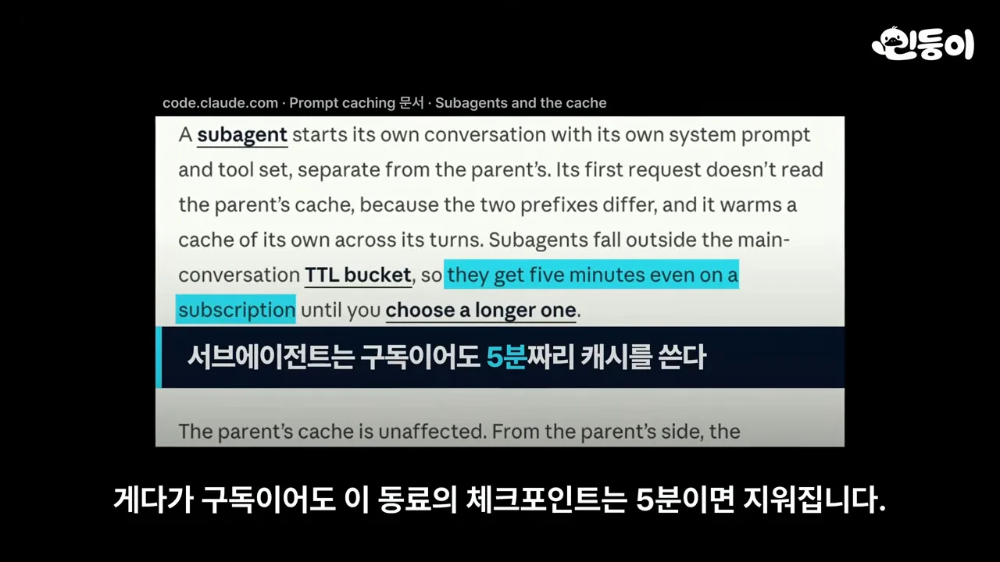
발표자의 기록에서도 이 영향이 커요. '새로 저장된 캐시' 막대의 73%가 서브에이전트 몫이었어요.
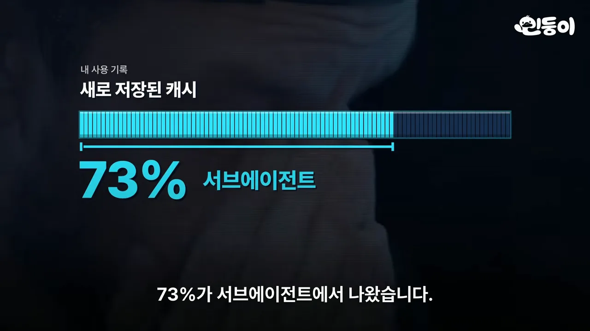
지금까지의 대화를 알아야 하는 일이라면 /fork가 나아요. /fork는 세이브 파일을 복사해서 다른 갈래로 진행하는 기능이에요. 화면 위 줄이 원래 대화, 아래 줄이 /fork로 나눈 갈래인데, 앞부분 파란 칸이 그대로 이어져 있어요. 캐시가 살아 있을 때 쓰면 원래 대화의 체크포인트에서 바로 이어 간다는 뜻이에요.
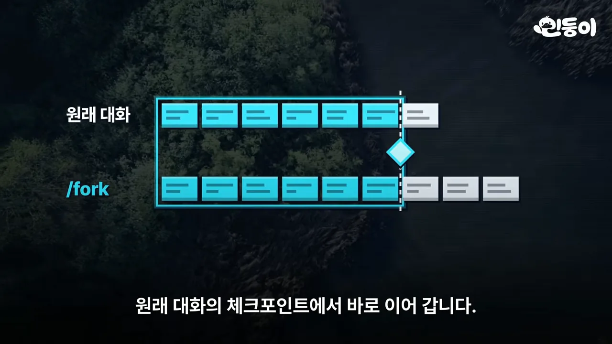
API로 서비스를 만들 때 프롬프트 배치
API로 직접 서비스를 만드는 사람은 체크포인트를 어디에 두는지까지 챙겨야 해요. API는 저장된 내용과 새 요청을 맨 앞부터 한 칸씩 비교하다가, 처음 달라진 곳부터 뒤를 전부 다시 만들어요. 화면 윗줄이 저장된 내용, 아랫줄이 새 요청인데 세 번째 칸에서 달라지자 그 뒤가 전부 회색이 됐어요.
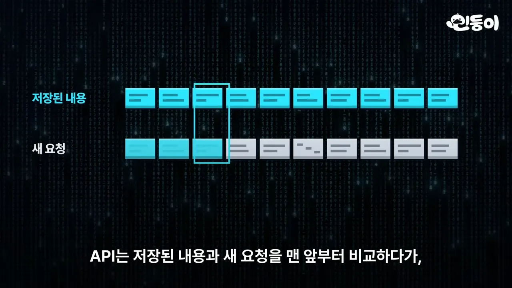
그래서 시스템 프롬프트 맨 앞에 오늘 날짜나 요청 번호를 넣으면 손해예요. 화면에서 맨 위 '오늘 날짜' 칸이 2026-10-30에서 2026-10-31로 바뀌자 캐시 첫 칸이 빨갛게 깨지고, 아래 지침이 똑같아도 매번 처음부터 다시 처리하게 돼요.
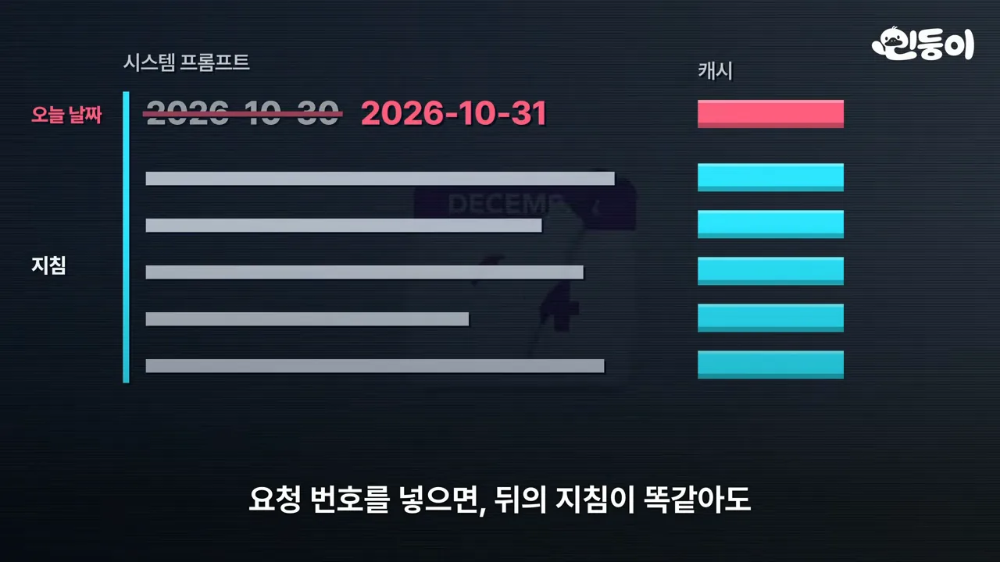
영상이 권하는 배치 원칙은 이래요.
- 자주 바뀌지 않는 지침과 도구 설명은 앞에 둬요.
- 사용자 입력처럼 매번 바뀌는 내용은 뒤에 둬요.
- 지난 대화는 고쳐 쓰지 말고 새 메시지를 뒤에 붙여요.
- 중간에 지침을 더해야 하면 시스템 프롬프트를 고치지 말고 메시지로 덧붙여요.
마지막 항목은 API 문서에 근거가 있어요. 화면의 강조 문장은 최신 모델에서 맨 위 system 필드를 고치는 대신 {"role": "system"} 메시지를 messages 끝에 붙이면 캐시된 앞부분이 그대로 유지된다는 내용이에요. 같은 문단 끝에 Claude Sonnet 5에서는 이 기능을 쓸 수 없다는 단서도 있어요.
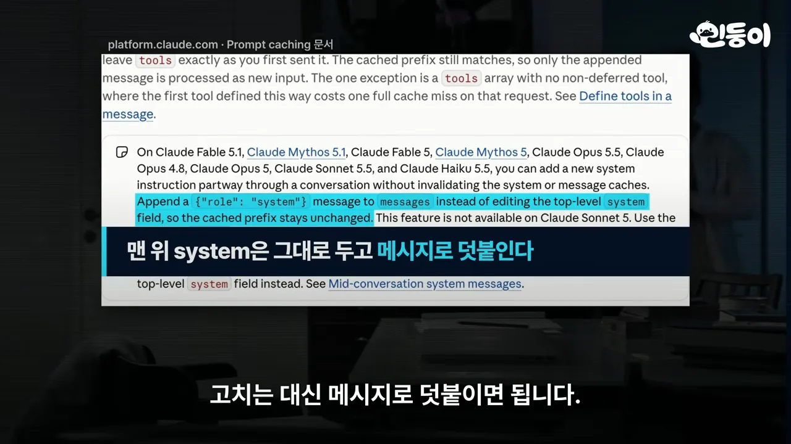
마지막으로, 게임을 시작하고 10초 만에 체크포인트를 만들 필요는 없죠. 캐시도 너무 짧은 내용은 아예 저장하지 않아요. 화면의 Cache limitations 목록 첫 줄이 Opus 5.5, Sonnet 5.5, Haiku 5.5 같은 모델의 최소 길이 512토큰이에요. 그 아래에는 다른 모델들의 2,048토큰, 4,096토큰 기준도 보여요.
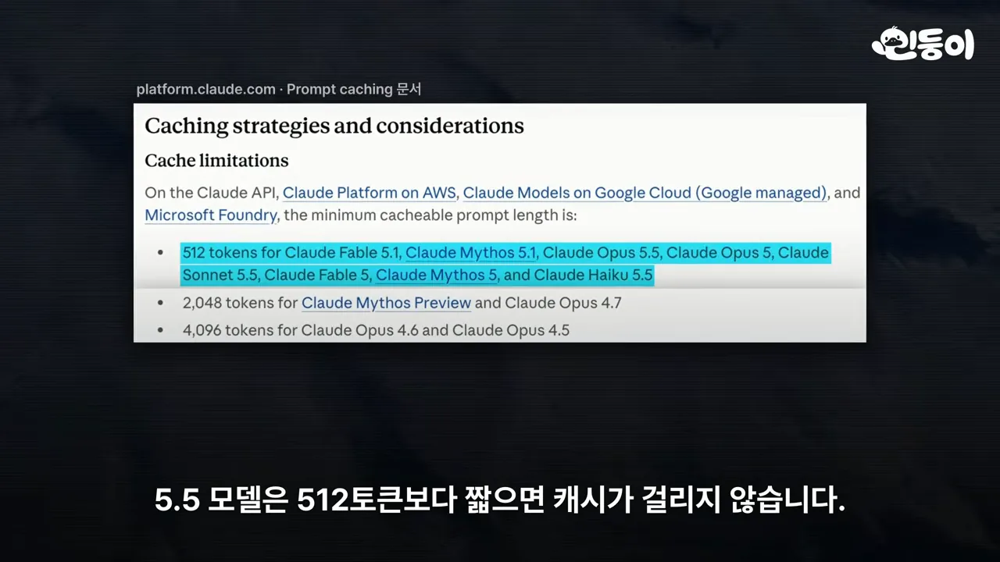
/usage로 내 캐시 확인하기
내 Claude Code가 체크포인트를 잘 쓰고 있는지는 /usage를 열면 보여요. 화면의 '프롬프트 캐시' 줄에는 요청 91번 중 입력의 92%를 캐시로 처리했고 미스는 1번이라는 숫자가 있어요. 빨간 'cold'는 지금 체크포인트가 꺼져 있다는 표시이고, 7시간 34분째 쉬는 중이라고 나와요.
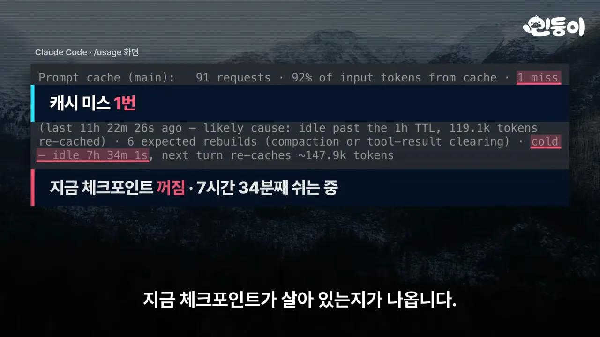
최신 버전은 마지막 미스가 왜 났는지도 짚어 줘요. 같은 줄의 'likely cause: idle past the 1h TTL'이 강조되는데, 1시간 넘게 자리를 비워서 캐시가 지워졌다는 뜻이에요.
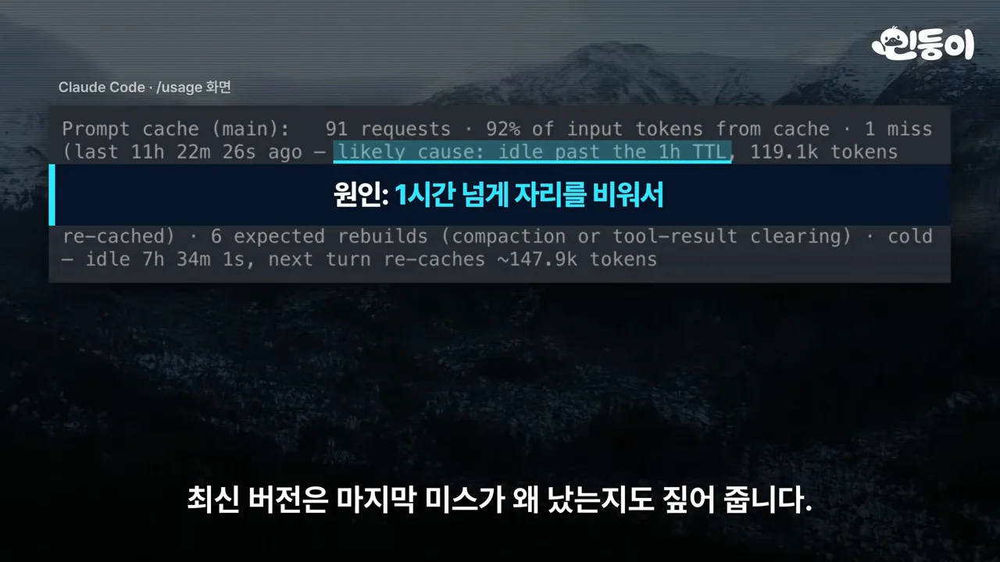
그 아래 사용량 분석에는 내 쓰임새에 맞는 추천이 떠요. 화면의 Costs 문서는 /usage 아래쪽에 'f to fix 2 of 3' 같은 안내가 보이면 f를 눌러 Claude Code가 추천을 바로 적용하게 할 수 있다고 설명해요. 이 단축키는 Claude Code v2.1.305 이상이 필요하다고 적혀 있어요.
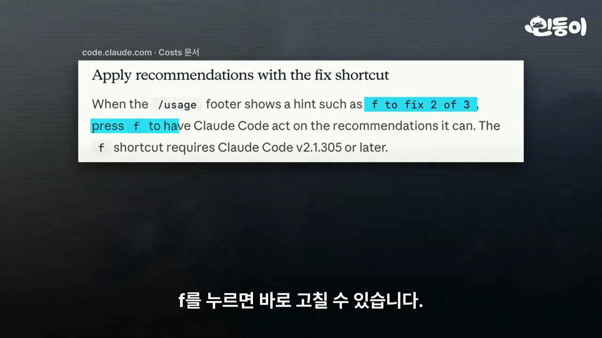
f 한 번으로 고칠 수 있어요. 영상 05:39에서 보기이것만 지키면 돼요
- 한 시간 넘게 자리를 비우기 전에 —
/loop로 체크포인트를 살려 두거나,/clear·/compact로 정리하고 가요. - 캐릭터는 처음에 정해요 — 모델과 패스트 모드는 대화 시작 때 고르고, 바꿔야 하면 새 대화에서 바꿔요.
- 스크린샷과 서브에이전트는 필요한 만큼만 — 앞 대화가 필요한 일은
/fork로 넘겨요. - 오늘
/usage부터 열어 봐요 — 히트율과 마지막 미스 원인을 확인해요.
영상은 이것만 지켜도 같은 구독으로 훨씬 오래 쓸 수 있다고 마무리해요.